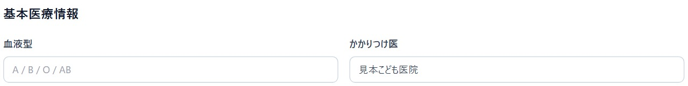
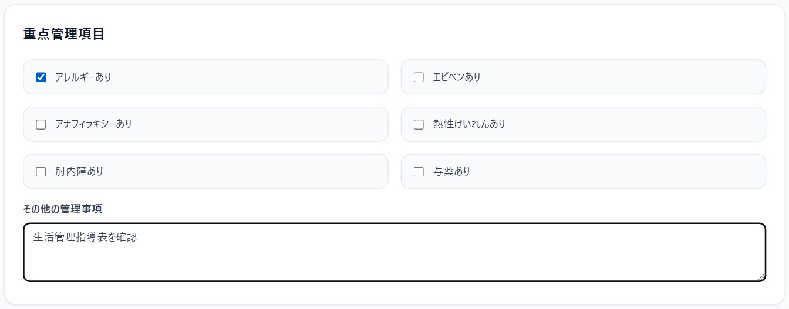
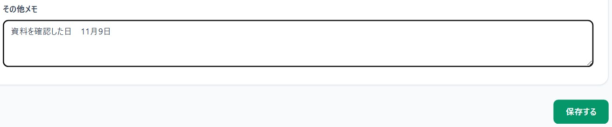

かかりつけ医や園で気をつけることを記録する
健康サマリーで園児の名前を確かめ、「健康プロフィール」を押します。保存は編集できる職員が行います。
画面は架空の園児の記録です。画像を押すと大きく見られます。
1連絡先を書く
「基本医療情報」に、園で確認した内容を入れます。「かかりつけ医」と「緊急搬送先」には、それぞれに対応する電話番号の欄があります。

2園で共有する項目を選ぶ
「重点管理項目」で該当する項目にチェックを付けます。欄にないことは「その他の管理事項」に書きます。続く「記録メモ」では、既往歴や服薬、保管場所などを記録できます。

アレルギーの品目や有効期限は、健康サマリーの「アレルギー管理」で記録します。
3保存して確かめる
画面の一番下にある「保存する」を押します。「健康プロフィールを更新しました。」と出たら保存できています。あとから直すときも、同じ欄を書き直して「保存する」を押します。

閲覧のみの職員には「保存する」が出ません。内容の変更は編集できる職員に依頼してください。